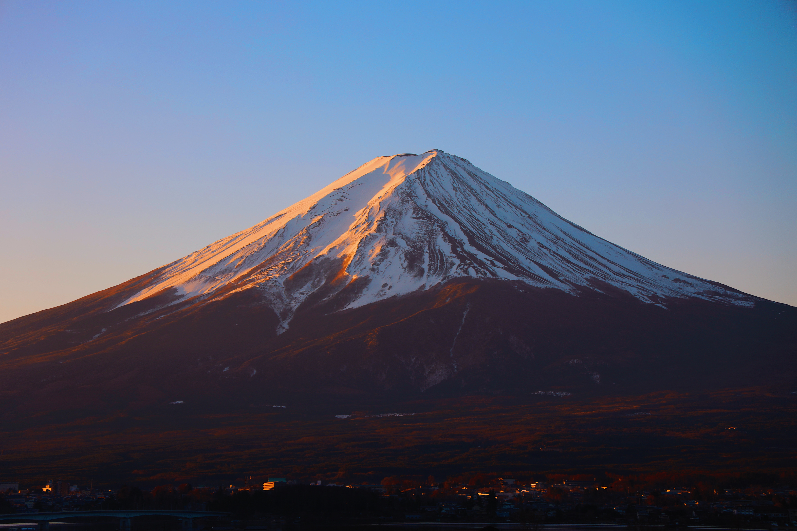
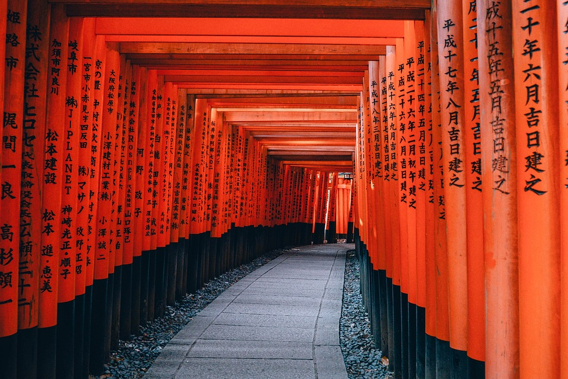
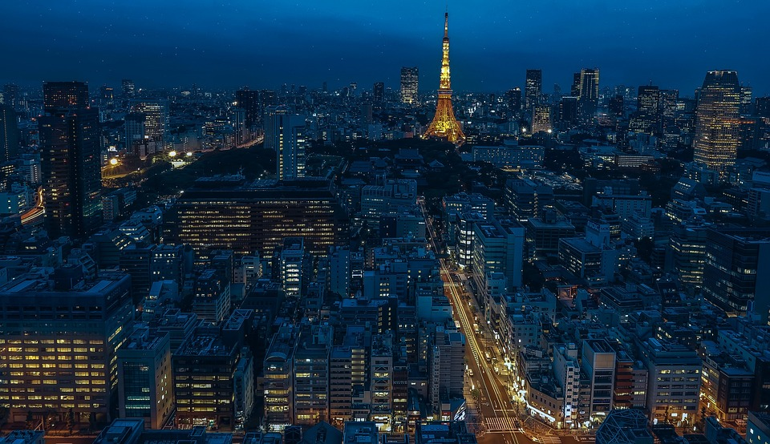
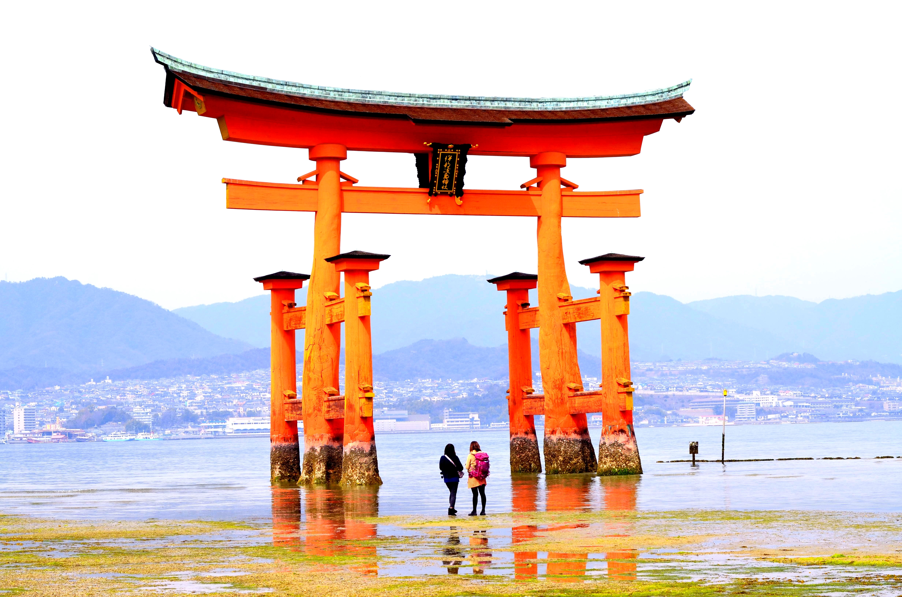

 De majestueuze berg Fuji (Fuji-san) is zonder twijfel de meest herkenbare bezienswaardigheid van Japan en tevens de hoogste bergtop van het land. Deze majestueuze en legendarische berg torent 3.776 meter hoog uit boven een verder grotendeels vlak landschap in het zuiden en oosten en is hoog genoeg om te worden gezien vanuit Tokio, meer dan 100 kilometer verderop.
02. Kyoto
 De stad was ooit de keizerlijke hoofdstad van Japan en is tegenwoordig een metropool waar traditie en vooruitstrevendheid in harmonie naast elkaar staan. De stad heeft over 1600 tempels, heiligdommen en parken waarvan Unesco er maar liefst zeventien als werelderfgoed heeft erkend. Breng een bezoek aan de oude uitgaanswijk Gion, met vele houten gevels, ryokans (herbergen) en chayas (theehuizen).
Een van de bekendste bezienswaardigheden in Kyoto is ongetwijfeld Fushimi Inari-Taisha. Een plek die bestaat uit duizenden rode torii-poorten, slingerend over een pad van 4 kilometer lang. Aan het eind van het pad tref je de heilige Inari-berg op 233 meter hoogte. Tip: de poorten ogen op het eerste gezicht misschien wat druk, maar loop vooral een stukje door. De meeste tours blijven namelijk in het begin hangen.
03. Vredesmonument van Hiroshima
Het Hiroshima Peace Memorial is een angstaanjagend eerbetoon aan de levens die verloren gingen toen de atoombom op 6 augustus 1945 op Hiroshima viel. Het monument, gelegen in een park, heeft de Genbaku Dome, het enige gebouw dat in de buurt is overgebleven nadat de bom is gevallen. Deze harde herinnering aan een wereld in oorlog herinnert bezoekers aan het belang van het menselijk leven en eert de slachtoffers zodat ze nooit zullen worden vergeten.
04. Tokio Toren
 De Tokyo Tower is een bewijs van de vooruitgang van technologie en het moderne leven. Geïnspireerd door het ontwerp van de Eiffeltoren, is het het op één na hoogste door mensen gemaakte bouwwerk in Japan en functioneert het als communicatie- en uitkijktoren. Bezoekers kunnen de toren beklimmen voor een ongeëvenaard uitzicht op Tokio en de omliggende gebieden, maar ook winkels en restaurants bezoeken.
05. itsukushima-schrijn
 Op slechts een korte tocht met de veerboot van het vasteland van Hiroshima ligt het eiland Miyajima, wereldberoemd als het Japanse heiligdomeiland. Miyajima, met een oppervlakte van 30 vierkante kilometer in de baai van Hiroshima, is vooral bekend als de thuisbasis van de Itsukushima-schrijn, een Shinto-tempel gewijd aan de prinsesdochters van de windgod Susanoo.
Het merendeel van de gebouwen van het heiligdom dateert uit de achtste eeuw en rijst op uit het water van een kleine baai die alleen wordt ondersteund door palen. Het effect bij vloed is gewoon verbluffend, waardoor deze constructies - waaronder de beroemde Grote Drijvende Poort (O-Torii) - lijken alsof ze op het water drijven.
Het is met elkaar verbonden door wandelpaden en bruggen en het is een fascinerende plek om te verkennen, met name de grotere zalen. Deze omvatten de voortreffelijke Honden (Grote Zaal), de Aanbiedingszaal (Heiden), de Gebedszaal (Haiden) en de Hal van Duizend Mats (Senjokaku).
Een ander opvallend kenmerk is het podium van het heiligdom, waar bezoekers worden vermaakt met traditionele dansen en muziekuitvoeringen. Ook het ontdekken waard zijn het prachtige terrein en de tuinen van het eiland, de thuisbasis van wilde herten en talloze vogelkolonies.